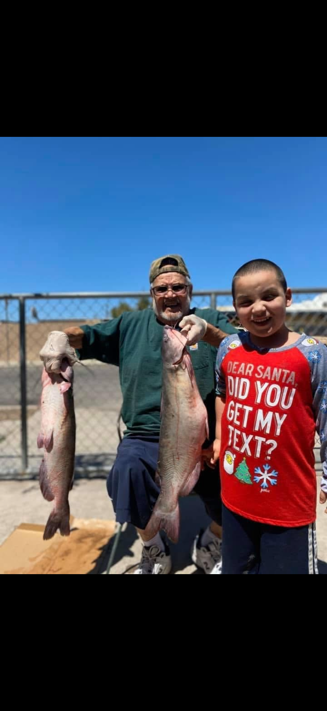
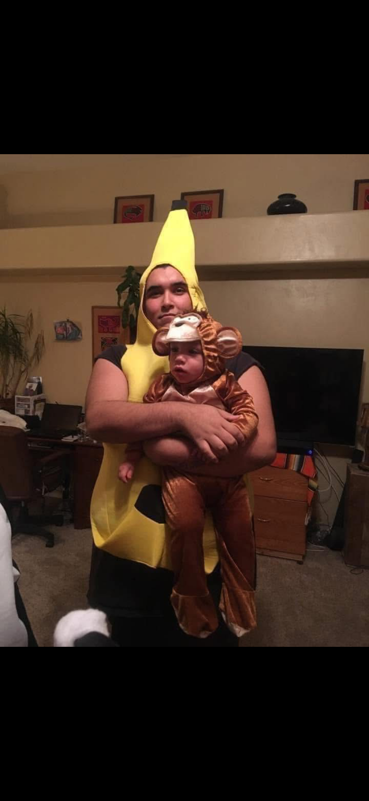

Fishing gives Armando the chance to spend quality time with family while enjoying the outdoors. Whether the fish are biting or not, being outside and away from everyday stress helps him recharge.
Hiking has become one of Armando's favorite hobbies because it challenges him physically while allowing him to enjoy amazing views. Reaching the top of a trail reminds him that hard work pays off.

Spending time with his wife and children is what motivates Armando every day. Whether they are celebrating holidays, relaxing at home, or making new memories together, family always comes first.
Want to discover hiking trails around the world? Visit AllTrails.
Visit AllTrails